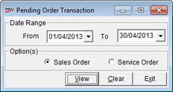

The Pending Order report provides information on all pending Sales and Service orders for the selected period.
How to reach: Reports > MIS > Pending Order
The Pending Order Transaction window is displayed.

Date Range: By default, the From and To are the current Shoper date. You can enter any date range but the To date cannot be greater than the Shoper date.
Option(s): Select Sales Order or Service Order to list pending orders.